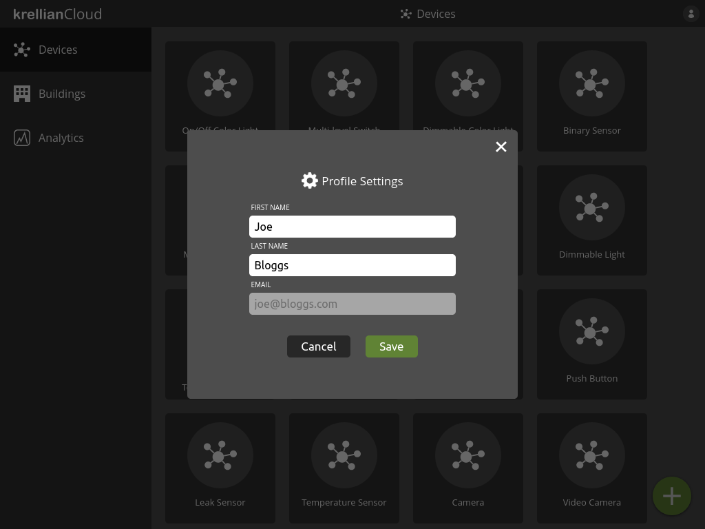

Edit Profile
To edit your profile settings:
- Click on the profile menu icon at the top right of the screen
- Click the "Profile settings" option
- Edit the desired fields
- Click "Save"
Note: Currently only the user's first name and last name can be edited. Email address can not be edited.
 Profile settings option in profile menu
Profile settings option in profile menu
 Profile settings dialog